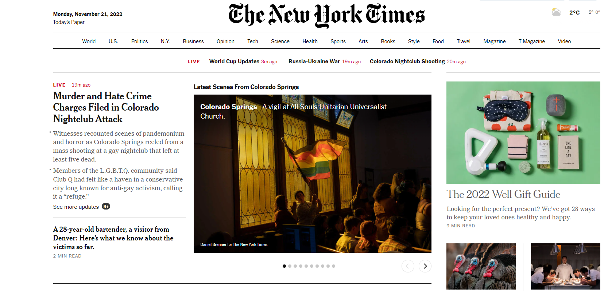

News of Hollywood franchise reboots are so frequent as to be usually unremarkable, even tiresome. But Disney's announcement last week that it was developing a Princess Diaries 3 film felt different. “The Princess Diaries 3 movie,” in the words of a popular tweet, “will heal our broken nation.”
That may sound over-dramatic - after all, cultural objects beloved by teenage girls invite suspicion at worst and polite tolerance at best; things that also fall under the banner of “chick-lit” doubly so. And yet the films, and the Meg Cabot books that provided their source material, arguably taught my teenaged self more about life - and even politics - than textbooks did. They were certainly more fun.
Looking for a relaxing read this summer to restore my broken, overstimulated brain, I turned to Cabot's 11-book series, which follows the awkward New York teenager Mia Thermopolis as she discovers that she is the royal heir to a small European principality called Genovia. They were a staple of my childhood, and I wondered how they would come across now. Perhaps I would get bored reading youth fiction as an adult. Perhaps, as with many beloved artefacts of the millennium, I would be perturbed by the series' awkward politics, and feel ashamed that I ever enjoyed it.
Instead, I was delighted all over again. The books weren't perfect, but I marvelled at how funny they were, how acerbic and quietly cynical. This must be what it's like for parents who bring their children to a screening of Frozen and smirk as they watch a character announcing that “[foot] size doesn't matter”.